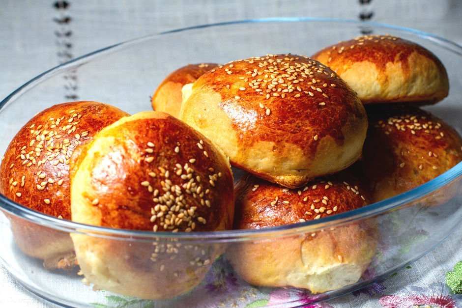

POĞAÇA TARİFİ

MALZEMELER
- 1 Su bardağı süt
- 1 Su bardağı su
- 1/2 Su bardağından biraz fazla yağ
- 1 paket instant maya
- 2 yumurta(birinin sarısı üzeri için ayrılacak)
- 1 yemek kaşığı şeker
- 1 tatlı kaşığı tuz
- Aldığı kadar un
HAZIRLANIŞI
- Süt ve su çok kaynamadan ısıtılır.
- Maya şeker tuz bir kaba alınır ve ısıtılan süt ve su üzerine eklenir. Maya kabarana kadar beklenir.
- Üzerine yağ ve yumurta eklenir. Homojen olana kadar karıştırılır.
- Daha sonra yavaş yavaş un ilave edilerek hamur yoğurulur.
- Ele yapışmayan yumuşak bir hamur elde ettiğinizde yoğurma işlemini bitirin ve üzerini bir bez ile kapatın.
- 15-20 dk. hamuru mayalanmaya bırakın.
- İçerisine dilediğiniz malzemeyi koyabilirsiniz.
- Üzerine yumurta sarısı sürülür ve tercihe bağlı olarak susam serpilir.
- AFİYET OLSUN...